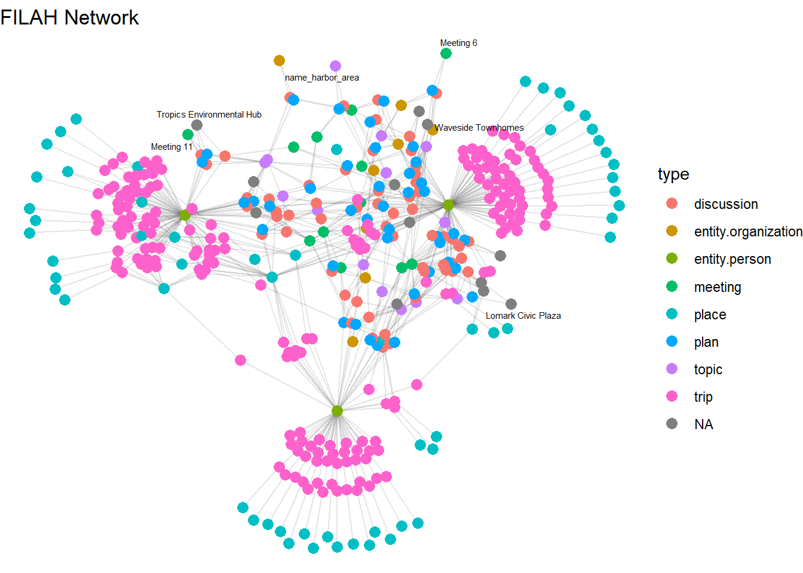
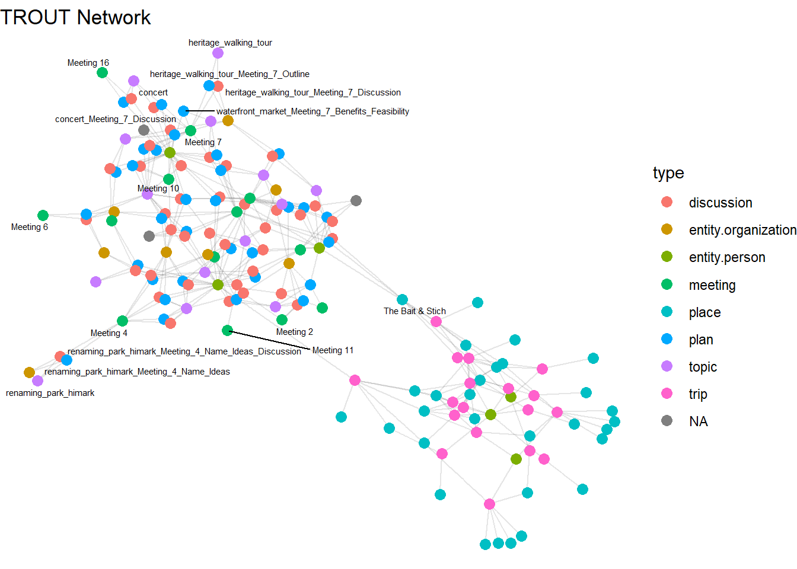
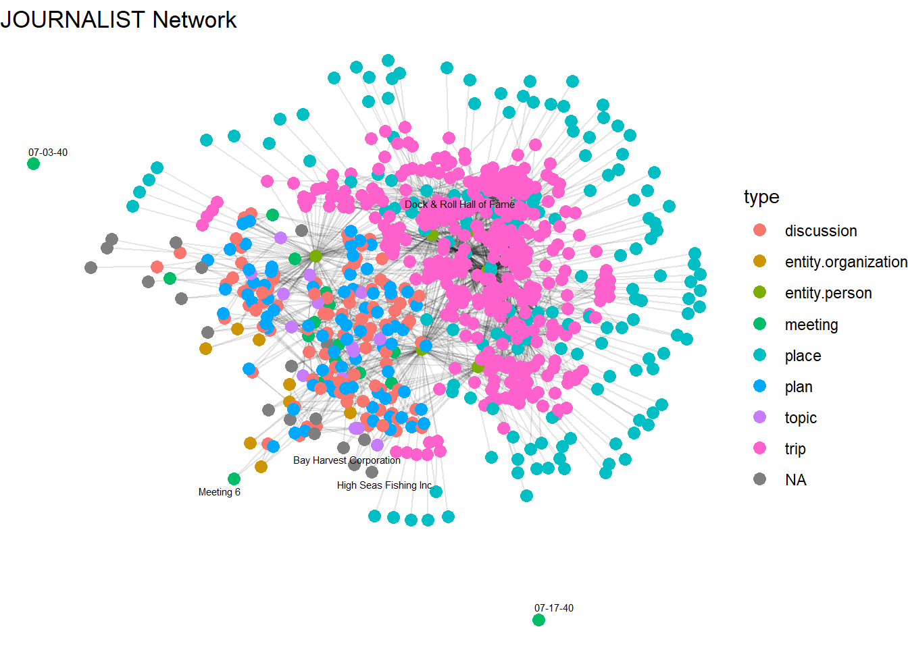
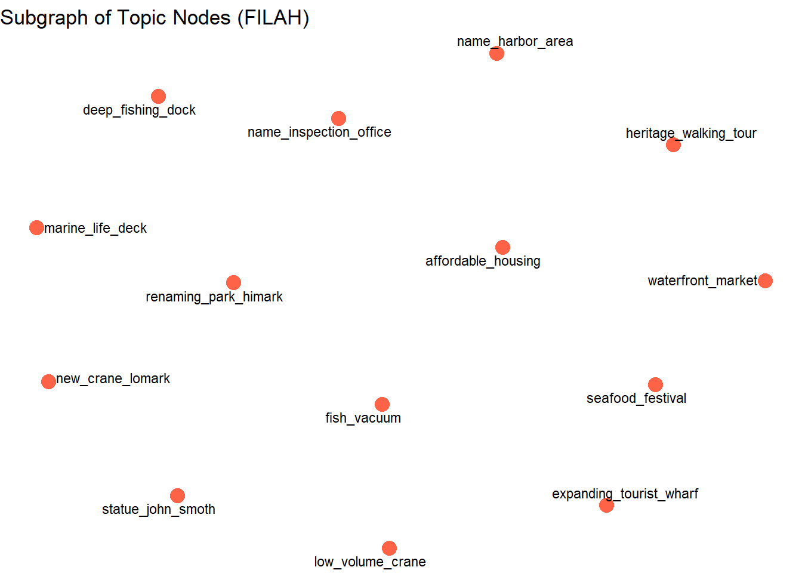
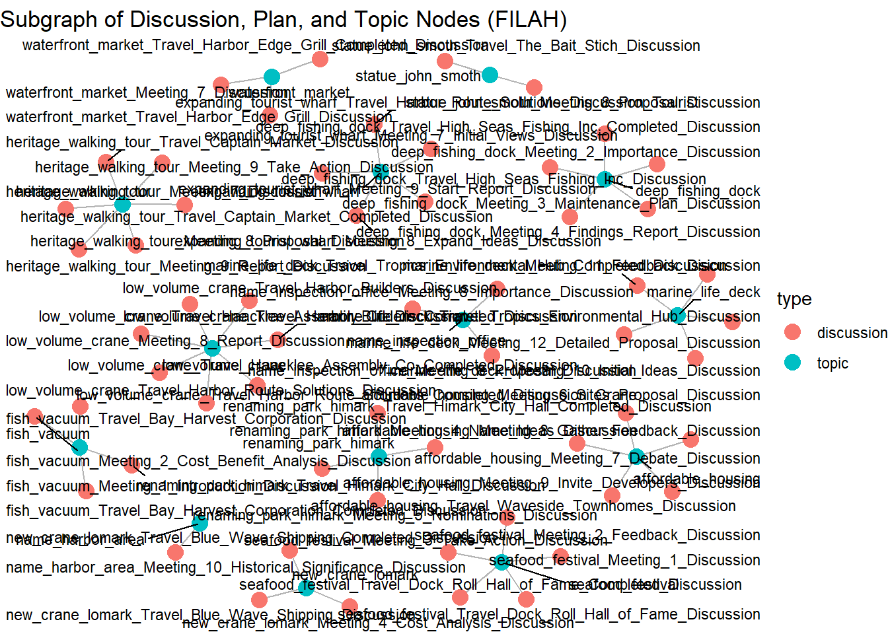
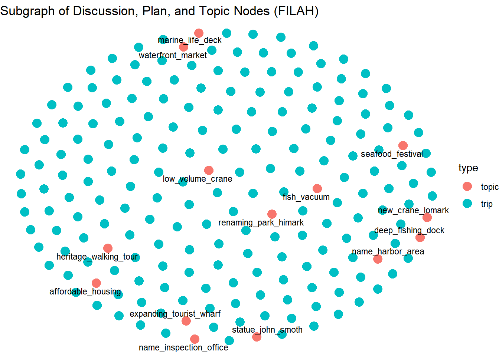

# Load packages
pacman::p_load(tidyverse, jsonlite, tidygraph, ggraph, igraph, SmartEDA, knitr)Take-Home Exercise 02
# Read JSON data
filah_raw <- fromJSON("data/FILAH.json")
trout_raw <- fromJSON("data/TROUT.json")
journalist_raw <- fromJSON("data/journalist.json")
# Optional: glimpse at structure
glimpse(filah_raw)List of 5
$ directed : logi TRUE
$ multigraph: logi TRUE
$ graph : Named list()
$ nodes :'data.frame': 396 obs. of 17 variables:
..$ type : chr [1:396] "meeting" "meeting" "meeting" "meeting" ...
..$ date : chr [1:396] "Meeting 1" "Meeting 2" "Meeting 3" "Meeting 4" ...
..$ label : chr [1:396] "Meeting 1" "Meeting 2" "Meeting 3" "Meeting 4" ...
..$ id : chr [1:396] "Meeting_1" "Meeting_2" "Meeting_3" "Meeting_4" ...
..$ name : chr [1:396] NA NA NA NA ...
..$ role : chr [1:396] NA NA NA NA ...
..$ short_topic: chr [1:396] NA NA NA NA ...
..$ long_topic : chr [1:396] NA NA NA NA ...
..$ short_title: chr [1:396] NA NA NA NA ...
..$ long_title : chr [1:396] NA NA NA NA ...
..$ plan_type : chr [1:396] NA NA NA NA ...
..$ lat : num [1:396] NA NA NA NA NA NA NA NA NA NA ...
..$ lon : num [1:396] NA NA NA NA NA NA NA NA NA NA ...
..$ zone : chr [1:396] NA NA NA NA ...
..$ zone_detail: chr [1:396] NA NA NA NA ...
..$ start : chr [1:396] NA NA NA NA ...
..$ end : chr [1:396] NA NA NA NA ...
$ links :'data.frame': 765 obs. of 9 variables:
..$ role : chr [1:765] "part_of" "part_of" "part_of" "part_of" ...
..$ source : chr [1:765] "Meeting_1" "Meeting_1" "Meeting_1" "Meeting_1" ...
..$ target : chr [1:765] "fish_vacuum_Meeting_1_Introduction_Discussion" "fish_vacuum_Meeting_1_Introduction" "seafood_festival_Meeting_1_Discussion" "seafood_festival_Meeting_1_Feasibility" ...
..$ key : int [1:765] 0 0 0 0 0 0 0 0 0 0 ...
..$ sentiment: num [1:765] NA NA NA NA NA NA NA NA NA NA ...
..$ reason : chr [1:765] NA NA NA NA ...
..$ industry :List of 765
.. ..$ : NULL
.. ..$ : NULL
.. ..$ : NULL
.. ..$ : NULL
.. ..$ : NULL
.. ..$ : NULL
.. ..$ : NULL
.. ..$ : NULL
.. ..$ : NULL
.. ..$ : NULL
.. ..$ : NULL
.. ..$ : NULL
.. ..$ : NULL
.. ..$ : NULL
.. ..$ : NULL
.. ..$ : NULL
.. ..$ : NULL
.. ..$ : NULL
.. ..$ : NULL
.. ..$ : NULL
.. ..$ : NULL
.. ..$ : NULL
.. ..$ : NULL
.. ..$ : NULL
.. ..$ : NULL
.. ..$ : NULL
.. ..$ : NULL
.. ..$ : NULL
.. ..$ : NULL
.. ..$ : NULL
.. ..$ : NULL
.. ..$ : NULL
.. ..$ : NULL
.. ..$ : NULL
.. ..$ : NULL
.. ..$ : NULL
.. ..$ : NULL
.. ..$ : NULL
.. ..$ : NULL
.. ..$ : NULL
.. ..$ : NULL
.. ..$ : NULL
.. ..$ : NULL
.. ..$ : NULL
.. ..$ : NULL
.. ..$ : NULL
.. ..$ : NULL
.. ..$ : NULL
.. ..$ : NULL
.. ..$ : NULL
.. ..$ : NULL
.. ..$ : NULL
.. ..$ : NULL
.. ..$ : NULL
.. ..$ : NULL
.. ..$ : NULL
.. ..$ : NULL
.. ..$ : NULL
.. ..$ : NULL
.. ..$ : NULL
.. ..$ : NULL
.. ..$ : NULL
.. ..$ : NULL
.. ..$ : NULL
.. ..$ : NULL
.. ..$ : NULL
.. ..$ : NULL
.. ..$ : NULL
.. ..$ : NULL
.. ..$ : NULL
.. ..$ : NULL
.. ..$ : NULL
.. ..$ : NULL
.. ..$ : NULL
.. ..$ : NULL
.. ..$ : NULL
.. ..$ : NULL
.. ..$ : NULL
.. ..$ : NULL
.. ..$ : NULL
.. ..$ : NULL
.. ..$ : NULL
.. ..$ : NULL
.. ..$ : NULL
.. ..$ : NULL
.. ..$ : NULL
.. ..$ : NULL
.. ..$ : NULL
.. ..$ : NULL
.. ..$ : NULL
.. ..$ : NULL
.. ..$ : NULL
.. ..$ : NULL
.. ..$ : NULL
.. ..$ : NULL
.. ..$ : NULL
.. ..$ : NULL
.. ..$ : NULL
.. ..$ : NULL
.. .. [list output truncated]
..$ status : chr [1:765] NA NA NA NA ...
..$ time : chr [1:765] NA NA NA NA ...glimpse(trout_raw)List of 5
$ directed : logi TRUE
$ multigraph: logi TRUE
$ graph : Named list()
$ nodes :'data.frame': 164 obs. of 17 variables:
..$ type : chr [1:164] "plan" "plan" "plan" "meeting" ...
..$ short_title: chr [1:164] "marine_life_deck_Meeting_12_Environmental_Impact_Report" "low_volume_crane_Meeting_8_Report" "deep_fishing_dock_Meeting_3_Maintenance_Plan" NA ...
..$ long_title : chr [1:164] "Present findings from the environmental impact study" "Report on travel and submit letter of support for low-volume unload crane" "Discuss maintenance plan and designate travel representatives" NA ...
..$ plan_type : chr [1:164] "Report" "report" "proposal" NA ...
..$ label : chr [1:164] "marine_life_deck_Meeting_12_Environmental_Impact_Report" "low_volume_crane_Meeting_8_Report" "deep_fishing_dock_Meeting_3_Maintenance_Plan" "Meeting 16" ...
..$ id : chr [1:164] "marine_life_deck_Meeting_12_Environmental_Impact_Report" "low_volume_crane_Meeting_8_Report" "deep_fishing_dock_Meeting_3_Maintenance_Plan" "Meeting_16" ...
..$ date : chr [1:164] NA NA NA "Meeting 16" ...
..$ short_topic: chr [1:164] NA NA NA NA ...
..$ long_topic : chr [1:164] NA NA NA NA ...
..$ lat : num [1:164] NA NA NA NA NA ...
..$ lon : num [1:164] NA NA NA NA NA ...
..$ zone : chr [1:164] NA NA NA NA ...
..$ zone_detail: chr [1:164] NA NA NA NA ...
..$ name : chr [1:164] NA NA NA NA ...
..$ role : chr [1:164] NA NA NA NA ...
..$ start : chr [1:164] NA NA NA NA ...
..$ end : chr [1:164] NA NA NA NA ...
$ links :'data.frame': 378 obs. of 9 variables:
..$ role : chr [1:378] "plan" "participant" "plan" "participant" ...
..$ source : chr [1:378] "marine_life_deck_Meeting_12_Environmental_Impact_Report" "marine_life_deck_Meeting_12_Environmental_Impact_Report" "low_volume_crane_Meeting_8_Report" "low_volume_crane_Meeting_8_Report" ...
..$ target : chr [1:378] "marine_life_deck" "Teddy Goldstein" "low_volume_crane" "Seal" ...
..$ key : int [1:378] 0 0 0 0 0 0 0 0 0 0 ...
..$ sentiment: num [1:378] NA -0.5 NA 0.1 NA NA NA NA NA NA ...
..$ reason : chr [1:378] NA "Prefers resources to be allocated toward the fishing industry." NA "Recognizes the crane's benefit to small-scale operations." ...
..$ industry :List of 378
.. ..$ : NULL
.. ..$ : chr "tourism"
.. ..$ : NULL
.. ..$ : chr "small vessel"
.. ..$ : NULL
.. ..$ : NULL
.. ..$ : NULL
.. ..$ : NULL
.. ..$ : NULL
.. ..$ : NULL
.. ..$ : NULL
.. ..$ : chr "tourism"
.. ..$ : NULL
.. ..$ : NULL
.. ..$ : chr [1:2] "large vessel" "small vessel"
.. ..$ : chr [1:2] "large vessel" "small vessel"
.. ..$ : NULL
.. ..$ : NULL
.. ..$ : chr "small vessel"
.. ..$ : NULL
.. ..$ : NULL
.. ..$ : NULL
.. ..$ : NULL
.. ..$ : NULL
.. ..$ : NULL
.. ..$ : NULL
.. ..$ : NULL
.. ..$ : NULL
.. ..$ : NULL
.. ..$ : NULL
.. ..$ : NULL
.. ..$ : NULL
.. ..$ : NULL
.. ..$ : NULL
.. ..$ : NULL
.. ..$ : chr [1:2] "large vessel" "small vessel"
.. ..$ : NULL
.. ..$ : NULL
.. ..$ : chr "tourism"
.. ..$ : NULL
.. ..$ : NULL
.. ..$ : chr "small vessel"
.. ..$ : NULL
.. ..$ : NULL
.. ..$ : NULL
.. ..$ : chr [1:2] "large vessel" "small vessel"
.. ..$ : chr [1:2] "large vessel" "small vessel"
.. ..$ : NULL
.. ..$ : NULL
.. ..$ : chr "large vessel"
.. ..$ : NULL
.. ..$ : NULL
.. ..$ : chr [1:2] "large vessel" "small vessel"
.. ..$ : NULL
.. ..$ : NULL
.. ..$ : NULL
.. ..$ : chr [1:2] "large vessel" "small vessel"
.. ..$ : NULL
.. ..$ : NULL
.. ..$ : NULL
.. ..$ : NULL
.. ..$ : NULL
.. ..$ : NULL
.. ..$ : NULL
.. ..$ : NULL
.. ..$ : NULL
.. ..$ : NULL
.. ..$ : chr "small vessel"
.. ..$ : NULL
.. ..$ : chr "tourism"
.. ..$ : NULL
.. ..$ : list()
.. ..$ : NULL
.. ..$ : NULL
.. ..$ : NULL
.. ..$ : NULL
.. ..$ : NULL
.. ..$ : NULL
.. ..$ : NULL
.. ..$ : chr "tourism"
.. ..$ : NULL
.. ..$ : chr "large vessel"
.. ..$ : NULL
.. ..$ : NULL
.. ..$ : chr "tourism"
.. ..$ : chr "tourism"
.. ..$ : NULL
.. ..$ : NULL
.. ..$ : NULL
.. ..$ : chr "large vessel"
.. ..$ : NULL
.. ..$ : chr "tourism"
.. ..$ : chr "tourism"
.. ..$ : NULL
.. ..$ : chr [1:2] "large vessel" "small vessel"
.. ..$ : chr [1:2] "large vessel" "small vessel"
.. ..$ : NULL
.. ..$ : NULL
.. ..$ : list()
.. .. [list output truncated]
..$ status : chr [1:378] NA NA NA NA ...
..$ time : chr [1:378] NA NA NA NA ...glimpse(journalist_raw)List of 5
$ directed : logi TRUE
$ multigraph: logi TRUE
$ graph : Named list()
$ nodes :'data.frame': 740 obs. of 17 variables:
..$ type : chr [1:740] "meeting" "meeting" "meeting" "meeting" ...
..$ date : chr [1:740] "Meeting 1" "Meeting 2" "Meeting 3" "Meeting 4" ...
..$ label : chr [1:740] "Meeting 1" "Meeting 2" "Meeting 3" "Meeting 4" ...
..$ id : chr [1:740] "Meeting_1" "Meeting_2" "Meeting_3" "Meeting_4" ...
..$ name : chr [1:740] NA NA NA NA ...
..$ role : chr [1:740] NA NA NA NA ...
..$ short_topic: chr [1:740] NA NA NA NA ...
..$ long_topic : chr [1:740] NA NA NA NA ...
..$ short_title: chr [1:740] NA NA NA NA ...
..$ long_title : chr [1:740] NA NA NA NA ...
..$ plan_type : chr [1:740] NA NA NA NA ...
..$ lat : num [1:740] NA NA NA NA NA NA NA NA NA NA ...
..$ lon : num [1:740] NA NA NA NA NA NA NA NA NA NA ...
..$ zone : chr [1:740] NA NA NA NA ...
..$ zone_detail: chr [1:740] NA NA NA NA ...
..$ start : chr [1:740] NA NA NA NA ...
..$ end : chr [1:740] NA NA NA NA ...
$ links :'data.frame': 2436 obs. of 9 variables:
..$ role : chr [1:2436] "part_of" "part_of" "part_of" "part_of" ...
..$ source : chr [1:2436] "Meeting_1" "Meeting_1" "Meeting_1" "Meeting_1" ...
..$ target : chr [1:2436] "fish_vacuum_Meeting_1_Introduction_Discussion" "fish_vacuum_Meeting_1_Introduction" "seafood_festival_Meeting_1_Discussion" "seafood_festival_Meeting_1_Feasibility" ...
..$ key : int [1:2436] 0 0 0 0 0 0 0 0 0 0 ...
..$ sentiment: num [1:2436] NA NA NA NA NA NA NA NA NA NA ...
..$ reason : chr [1:2436] NA NA NA NA ...
..$ industry :List of 2436
.. ..$ : NULL
.. ..$ : NULL
.. ..$ : NULL
.. ..$ : NULL
.. ..$ : NULL
.. ..$ : NULL
.. ..$ : NULL
.. ..$ : NULL
.. ..$ : NULL
.. ..$ : NULL
.. ..$ : NULL
.. ..$ : NULL
.. ..$ : NULL
.. ..$ : NULL
.. ..$ : NULL
.. ..$ : NULL
.. ..$ : NULL
.. ..$ : NULL
.. ..$ : NULL
.. ..$ : NULL
.. ..$ : NULL
.. ..$ : NULL
.. ..$ : NULL
.. ..$ : NULL
.. ..$ : NULL
.. ..$ : NULL
.. ..$ : NULL
.. ..$ : NULL
.. ..$ : NULL
.. ..$ : NULL
.. ..$ : NULL
.. ..$ : NULL
.. ..$ : NULL
.. ..$ : NULL
.. ..$ : NULL
.. ..$ : NULL
.. ..$ : NULL
.. ..$ : NULL
.. ..$ : NULL
.. ..$ : NULL
.. ..$ : NULL
.. ..$ : NULL
.. ..$ : NULL
.. ..$ : NULL
.. ..$ : NULL
.. ..$ : NULL
.. ..$ : NULL
.. ..$ : NULL
.. ..$ : NULL
.. ..$ : NULL
.. ..$ : NULL
.. ..$ : NULL
.. ..$ : NULL
.. ..$ : NULL
.. ..$ : NULL
.. ..$ : NULL
.. ..$ : NULL
.. ..$ : NULL
.. ..$ : NULL
.. ..$ : NULL
.. ..$ : NULL
.. ..$ : NULL
.. ..$ : NULL
.. ..$ : NULL
.. ..$ : NULL
.. ..$ : NULL
.. ..$ : NULL
.. ..$ : NULL
.. ..$ : NULL
.. ..$ : NULL
.. ..$ : NULL
.. ..$ : NULL
.. ..$ : NULL
.. ..$ : NULL
.. ..$ : NULL
.. ..$ : NULL
.. ..$ : NULL
.. ..$ : NULL
.. ..$ : NULL
.. ..$ : NULL
.. ..$ : NULL
.. ..$ : NULL
.. ..$ : NULL
.. ..$ : NULL
.. ..$ : NULL
.. ..$ : NULL
.. ..$ : NULL
.. ..$ : NULL
.. ..$ : NULL
.. ..$ : NULL
.. ..$ : NULL
.. ..$ : NULL
.. ..$ : NULL
.. ..$ : NULL
.. ..$ : NULL
.. ..$ : NULL
.. ..$ : NULL
.. ..$ : NULL
.. ..$ : NULL
.. .. [list output truncated]
..$ status : chr [1:2436] NA NA NA NA ...
..$ time : chr [1:2436] NA NA NA NA ...load_graph_from_json <- function(path) {
raw <- fromJSON(path)
# Minimal clean-up: Only keep essential fields, ensure no NA ids
nodes <- as_tibble(raw$nodes) %>%
select(id, label, type) %>%
filter(!is.na(id))
edges <- as_tibble(raw$links) %>%
rename(from = source, to = target) %>%
select(from, to) %>%
filter(!is.na(from), !is.na(to)) %>%
filter(from %in% nodes$id, to %in% nodes$id)
tbl_graph(nodes = nodes, edges = edges, directed = TRUE)
}
# Usage:
filah_graph <- load_graph_from_json("data/FILAH.json")
trout_graph <- load_graph_from_json("data/TROUT.json")
journalist_graph <- load_graph_from_json("data/journalist.json")
# Now these are all tidygraph objects:
class(filah_graph)[1] "tbl_graph" "igraph" vcount(filah_graph) # Number of nodes[1] 396ecount(filah_graph) # Number of edges[1] 765net_stats <- tibble(
Network = c("FILAH", "TROUT", "JOURNALIST"),
Nodes = c(vcount(filah_graph), vcount(trout_graph), vcount(journalist_graph)),
Edges = c(ecount(filah_graph), ecount(trout_graph), ecount(journalist_graph))
)
print(net_stats)# A tibble: 3 × 3
Network Nodes Edges
<chr> <dbl> <dbl>
1 FILAH 396 765
2 TROUT 164 378
3 JOURNALIST 740 2436library(ggraph)
plot_network <- function(g, title) {
ggraph(g, layout = "fr") +
geom_edge_link(alpha = 0.1) +
geom_node_point(aes(color = type), size = 3) +
geom_node_text(aes(label = label), repel = TRUE, size = 2) +
theme_void() +
labs(title = title)
}
plot_network(filah_graph, "FILAH Network")
plot_network(trout_graph, "TROUT Network")
plot_network(journalist_graph, "JOURNALIST Network")
# For journalist_graph (repeat for others if needed)
centrality_stats <- journalist_graph %>%
activate(nodes) %>%
mutate(degree = centrality_degree(),
betweenness = centrality_betweenness()) %>%
as_tibble() %>%
filter(type == "board") %>%
arrange(desc(degree))
print(centrality_stats)# A tibble: 0 × 5
# ℹ 5 variables: id <chr>, label <chr>, type <chr>, degree <dbl>,
# betweenness <dbl>nodes_filah <- as_tibble(filah_graph)$id
nodes_trout <- as_tibble(trout_graph)$id
nodes_journalist <- as_tibble(journalist_graph)$id
unique_to_journalist <- setdiff(nodes_journalist, union(nodes_filah, nodes_trout))
cat("Nodes only in journalist (missing from groups):", length(unique_to_journalist), "\n")Nodes only in journalist (missing from groups): 281 print(unique_to_journalist) [1] "Meeting_13"
[2] "Meeting_14"
[3] "Meeting_15"
[4] "statue_john_smoth_Meeting_9_Gather_Feedback_Discussion"
[5] "statue_john_smoth_Meeting_9_Feedback"
[6] "statue_john_smoth_Travel_The_Bait_Stich_Completed_Discussion"
[7] "statue_john_smoth_Meeting_10_Presentation_Discussion"
[8] "statue_john_smoth_Meeting_10_Presentation"
[9] "Bay Harvest Corporation"
[10] "renaming_park_himark_Travel_Anchor_Way_Grill_Discussion"
[11] "renaming_park_himark_Travel_Anchor_Way_Grill"
[12] "renaming_park_himark_Travel_Sailors_Perch_Light_Discussion"
[13] "renaming_park_himark_Travel_Sailors_Perch_Light"
[14] "5849775342"
[15] "renaming_park_himark_Travel_Anchor_Way_Grill_Completed_Discussion"
[16] "renaming_park_himark_Travel_Sailors_Perch_Light_Completed_Discussion"
[17] "renaming_park_himark_Meeting_8_Compile_Nominations_Discussion"
[18] "renaming_park_himark_Meeting_8_Compile_Nominations"
[19] "renaming_park_himark_Meeting_7_Announce_Name_Discussion"
[20] "renaming_park_himark_Meeting_7_Announce_Name"
[21] "renaming_park_himark_Meeting_7_Unveiling_Event_Discussion"
[22] "renaming_park_himark_Meeting_7_Unveiling_Event"
[23] "name_harbor_area_Travel_The_Bait_Stich_Discussion"
[24] "name_harbor_area_Travel_The_Bait_Stich"
[25] "name_harbor_area_Meeting_11_Harbor_Odyssey_Tours_Discussion"
[26] "name_harbor_area_Meeting_11_Harbor_Odyssey_Tours"
[27] "Harbor Odyssey Tours"
[28] "name_harbor_area_Meeting_11_Draft_Names_Discussion"
[29] "name_harbor_area_Meeting_11_Draft_Names"
[30] "name_harbor_area_Travel_Harbor_Odyssey_Tours"
[31] "10803677425"
[32] "name_harbor_area_Travel_The_Bait_Stich_Completed_Discussion"
[33] "name_harbor_area_Travel_Harbor_Odyssey_Tours_Completed_Discussion"
[34] "name_harbor_area_Meeting_14_Finalize_Name_Discussion"
[35] "name_harbor_area_Meeting_14_Finalize_Name"
[36] "Sean"
[37] "name_inspection_office_Meeting_8_Proposal"
[38] "name_inspection_office_Travel_Lomark_Civic_Plaza_Discussion"
[39] "name_inspection_office_Meeting_14_Announcement_Discussion"
[40] "name_inspection_office_Meeting_14_Announcement"
[41] "seafood_festival_Meeting_3_Report_Discussion"
[42] "seafood_festival_Meeting_3_Report"
[43] "waterfront_market_Travel_Harborfront_Market_Discussion"
[44] "waterfront_market_Travel_Harborfront_Market"
[45] "35913119"
[46] "waterfront_market_Meeting_8_Gather_Feedback_Discussion"
[47] "waterfront_market_Meeting_8_Gather_Feedback"
[48] "waterfront_market_Travel_Harborfront_Market_Completed_Discussion"
[49] "37831107"
[50] "concert_Travel_Packland_Elementary_Discussion"
[51] "concert_Travel_Harborfront_Market"
[52] "concert_Travel_Paakland_Elementary"
[53] "concert_Travel_Paakland_Elementary_Completed_Discussion"
[54] "concert_Meeting_16_Feedback_Discussion"
[55] "concert_Meeting_16_Feedback"
[56] "concert_Meeting_16_Communication_Complaints_Discussion"
[57] "concert_Meeting_16_Communication_Complaints"
[58] "37892464"
[59] "trip_2"
[60] "950773347"
[61] "trip_3"
[62] "35868389"
[63] "37831223"
[64] "2564318352"
[65] "trip_6"
[66] "12674442354"
[67] "trip_7"
[68] "trip_9"
[69] "trip_10"
[70] "9839219428"
[71] "trip_13"
[72] "30187146"
[73] "37864373"
[74] "2564179411"
[75] "37799737"
[76] "trip_17"
[77] "8774871637"
[78] "trip_18"
[79] "36979025"
[80] "trip_21"
[81] "37872598"
[82] "trip_25"
[83] "trip_26"
[84] "37852571"
[85] "2912844717"
[86] "trip_29"
[87] "37834631"
[88] "trip_31"
[89] "trip_32"
[90] "48568668"
[91] "trip_34"
[92] "trip_35"
[93] "trip_36"
[94] "trip_37"
[95] "trip_39"
[96] "trip_42"
[97] "582199729"
[98] "trip_45"
[99] "37833911"
[100] "trip_46"
[101] "trip_49"
[102] "48557904"
[103] "trip_51"
[104] "37810347"
[105] "trip_53"
[106] "trip_54"
[107] "48499016"
[108] "trip_55"
[109] "trip_58"
[110] "trip_60"
[111] "trip_62"
[112] "37882709"
[113] "trip_66"
[114] "trip_68"
[115] "37810348"
[116] "trip_69"
[117] "trip_75"
[118] "trip_80"
[119] "trip_82"
[120] "48549608"
[121] "trip_84"
[122] "trip_86"
[123] "trip_87"
[124] "trip_88"
[125] "trip_89"
[126] "37857689"
[127] "trip_90"
[128] "trip_91"
[129] "30188922"
[130] "trip_93"
[131] "trip_95"
[132] "48512198"
[133] "trip_96"
[134] "trip_98"
[135] "trip_103"
[136] "48531040"
[137] "trip_104"
[138] "trip_107"
[139] "trip_108"
[140] "37831236"
[141] "7557795052"
[142] "trip_113"
[143] "trip_117"
[144] "7557795055"
[145] "48510772"
[146] "trip_124"
[147] "491470184"
[148] "trip_126"
[149] "trip_127"
[150] "trip_128"
[151] "trip_129"
[152] "trip_133"
[153] "582382094"
[154] "trip_140"
[155] "trip_141"
[156] "48389218"
[157] "trip_142"
[158] "48516745"
[159] "1332340938"
[160] "trip_147"
[161] "trip_148"
[162] "trip_150"
[163] "trip_151"
[164] "trip_152"
[165] "trip_156"
[166] "30185051"
[167] "trip_159"
[168] "37883680"
[169] "trip_160"
[170] "trip_161"
[171] "2858406995"
[172] "trip_162"
[173] "trip_164"
[174] "trip_165"
[175] "trip_167"
[176] "trip_168"
[177] "trip_171"
[178] "trip_172"
[179] "trip_174"
[180] "48476691"
[181] "trip_176"
[182] "trip_181"
[183] "trip_182"
[184] "48531694"
[185] "trip_185"
[186] "trip_189"
[187] "trip_191"
[188] "582184632"
[189] "trip_194"
[190] "2564179398"
[191] "trip_198"
[192] "trip_199"
[193] "trip_202"
[194] "691146642"
[195] "trip_206"
[196] "trip_208"
[197] "36959793"
[198] "trip_209"
[199] "2919456351"
[200] "trip_212"
[201] "48488713"
[202] "trip_213"
[203] "37881322"
[204] "trip_214"
[205] "37840381"
[206] "trip_216"
[207] "trip_220"
[208] "trip_222"
[209] "trip_223"
[210] "trip_225"
[211] "trip_226"
[212] "9839219423"
[213] "trip_232"
[214] "12698974244"
[215] "trip_234"
[216] "8742962146"
[217] "trip_236"
[218] "581588620"
[219] "581725347"
[220] "trip_237"
[221] "trip_239"
[222] "trip_245"
[223] "trip_253"
[224] "48503211"
[225] "trip_254"
[226] "trip_255"
[227] "trip_260"
[228] "581862761"
[229] "trip_261"
[230] "6005475082"
[231] "trip_265"
[232] "trip_269"
[233] "trip_272"
[234] "2133919891"
[235] "48534420"
[236] "trip_278"
[237] "12687824227"
[238] "trip_279"
[239] "trip_280"
[240] "48508501"
[241] "trip_281"
[242] "trip_284"
[243] "trip_287"
[244] "trip_288"
[245] "trip_289"
[246] "48552137"
[247] "36955939"
[248] "trip_293"
[249] "trip_295"
[250] "trip_297"
[251] "trip_298"
[252] "trip_299"
[253] "48510013"
[254] "trip_301"
[255] "48462883"
[256] "trip_304"
[257] "trip_305"
[258] "7557795048"
[259] "trip_310"
[260] "trip_313"
[261] "trip_316"
[262] "trip_318"
[263] "trip_321"
[264] "48554034"
[265] "trip_324"
[266] "9839219434"
[267] "trip_325"
[268] "trip_326"
[269] "trip_329"
[270] "2091409677"
[271] "trip_330"
[272] "582327013"
[273] "trip_331"
[274] "trip_332"
[275] "48498977"
[276] "trip_333"
[277] "48543659"
[278] "trip_336"
[279] "48513116"
[280] "trip_339"
[281] "trip_340" ig_journalist <- as.igraph(journalist_graph)
head(V(ig_journalist)$name, 10)NULL# 1. Get topic node IDs
topic_ids <- as_tibble(filah_graph) %>%
filter(type == "topic") %>%
pull(id)
# 2. Convert to igraph
ig_filah <- as.igraph(filah_graph)
# 3. Induce subgraph on topic IDs (use 'id' attribute)
topic_sub <- induced_subgraph(ig_filah, vids = V(ig_filah)[id %in% topic_ids])
# 4. Convert back to tidygraph for easy plotting
tg_topic_sub <- as_tbl_graph(topic_sub)
# 5. Plot
ggraph(tg_topic_sub, layout = "fr") +
geom_edge_link(alpha = 0.3) +
geom_node_point(color = "tomato", size = 4) +
geom_node_text(aes(label = label), repel = TRUE, size = 3) +
theme_void() +
labs(title = "Subgraph of Topic Nodes (FILAH)")
# 1. Get node IDs for all three types
relevant_ids <- as_tibble(filah_graph) %>%
filter(type %in% c("discussion", "role", "topic")) %>%
pull(id)
# 2. Convert to igraph
ig_filah <- as.igraph(filah_graph)
# 3. Induce subgraph using 'id' attribute
subgraph_dpt <- induced_subgraph(ig_filah, vids = V(ig_filah)[id %in% relevant_ids])
# 4. Convert back to tidygraph for plotting
tg_subgraph_dpt <- as_tbl_graph(subgraph_dpt)
# 5. Plot, color by type
ggraph(tg_subgraph_dpt, layout = "fr") +
geom_edge_link(alpha = 0.3) +
geom_node_point(aes(color = type), size = 4) +
geom_node_text(aes(label = label), repel = TRUE, size = 3) +
theme_void() +
labs(title = "Subgraph of Discussion, Plan, and Topic Nodes (FILAH)")
# 1. Get node IDs for all three types
relevant_ids <- as_tibble(filah_graph) %>%
filter(type %in% c("trip", "role", "topic")) %>%
pull(id)
# 2. Convert to igraph
ig_filah <- as.igraph(filah_graph)
# 3. Induce subgraph using 'id' attribute
subgraph_dpt <- induced_subgraph(ig_filah, vids = V(ig_filah)[id %in% relevant_ids])
# 4. Convert back to tidygraph for plotting
tg_subgraph_dpt <- as_tbl_graph(subgraph_dpt)
# 5. Plot, color by type
ggraph(tg_subgraph_dpt, layout = "fr") +
geom_edge_link(alpha = 0.3) +
geom_node_point(aes(color = type), size = 4) +
geom_node_text(aes(label = label), repel = TRUE, size = 3) +
theme_void() +
labs(title = "Subgraph of Discussion, Plan, and Topic Nodes (FILAH)")